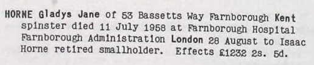
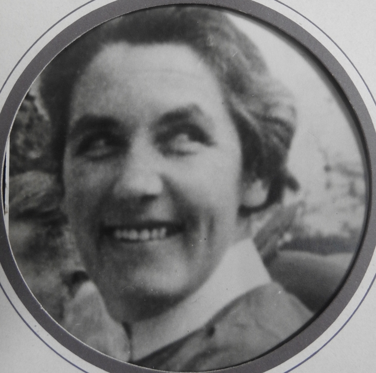
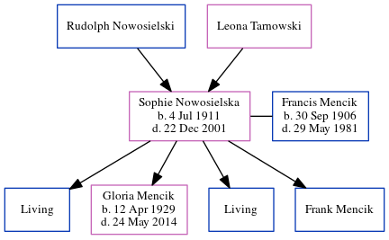

Gladys Jane Horne 1914 - 1958
[ Home ] | [ Calendar ] | [ Surnames Index ] | [ Census Index ] | [ Family History ]A nurse and the 3rd of 7 children of Isaac Horne (a hay trusser & thatcher heavy worker market gardener) and May Spratt, Gladys Horne, the aunt of Nigel Horne, was born in Ramsgate, Kent, England on Jan 25, 19141,2,3,4.
During her life, she was living at Pansy Cottage, Way, Minster, Thanet, Kent, England on Jun 19, 19211; at 68 Lynton Avenue, Ealing, London, England in 19359; at 55 Salisbury Road, Banstead, Surrey, England on Sep 29, 19392; and at 53 Bassetts Way, Farnborough, Kent, England in 1958. She traveled from London, England on Dec 16, 1938. She arrived in Malta in 1938.
She died on Jul 11, 1958 in Farnborough Hospital, Orpington, Kent5,6,7 and was buried on Minster Cemetery, Tothill Street, Minster in Thanet in 19588.
Parents
- Isaac was born on Apr 10, 1885
- May was born on Jan 1, 1888
Citations
- 1921 Census Of England & Wales - Findmypast (was age 7 and the daughter of the head of the household)
- 1939 Register - Findmypast (was recorded at this address)
- England & Wales births 1837-2006 - Findmypast
- Other
- England & Wales Government Probate Death Index 1858-2019 - Findmypast
- England & Wales, Death Index: 1984-2005 Online publication - Provo, UT, USA: The Generations Network, Inc., 2007.Original data - General Register Office. England and Wales Civil Registration Indexes. London, England: General Register Office. © Crown copyright. Published by permission of the Cont
- England & Wales, National Probate Calendar (Index of Wills and Administrations),1861-1941 Online publication - Provo, UT, USA: Ancestry.com Operations Inc, 2010.Original data - Principal Probate Registry. Calendar of the Grants of Probate and Letters of Administration made in the Probate Registries of the High Court of Justice in England. Londo
- Billiongraves
- London, England, Electoral Registers, 1832-1965 Ancestry.com Operations, Inc.
Media
Mum and Dad Marriage

isaac horne - may spratt - gladys horne - headstone

Gladys Jane Horne
Gladys Horne - probate

Gladys Jane Horne - 2

England & Wales deaths 1837-2007 Transcription - BMD-D-1958-3-AZ-000424-055
England & Wales births 1837-2006 Transcription - BMD-B-1914-1-AZ-000730-067
1939 Register Transcription - TNA-R39-1308-1308D-004-12
Passenger Lists leaving UK 1890-1960 Image - TNA-BT27-1518-00-0013-P-0006F
Passenger Lists Leaving Uk 1890-1960 - TNA-BT27-1518000013-00196
England & Wales Government Probate Death Index 1858-2019 - GBOR/GOVPROBATE/C/1958-1958/00108128
Family Tree
Generated by ged2site. Last updated on Jun 11, 2024